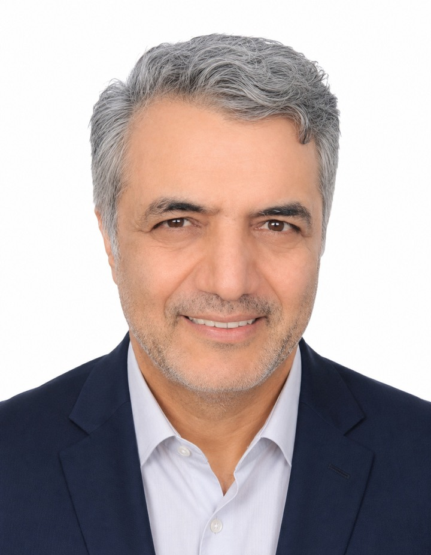

HeatSafe / Author & Developer

Faramarz Kowsari
Author · Software Engineer · AI Researcher
Author · Software Engineer · AI Researcher
AUTHOR, DEVELOPER AND RESEARCH-SOFTWARE MAINTAINER
Faramarz Kowsari
Faramarz Kowsari is an author, Software Engineer and AI researcher based in Istanbul. Focusing on the intersection of technology, education, and personal growth, he has published over 80 digital titles on international platforms. His areas of expertise span Artificial Intelligence, prompt engineering, modern trading strategies (Smart Money Concepts & algorithmic trading), as well as classical literature and mindfulness. In addition to writing, he develops web-based educational tools and creates specialized instructional video content.